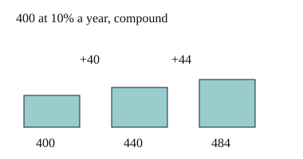

Part of Compound Interest. Answer in the chat (1: ..., g: c), add sure or guess after any answer, and say done when finished.
Last time: 400 at 10% a year, each year's interest added before the next. How much after 2 years? You said a) 480. It is b) 484.

In the second year, the 40 you earned is in the account too, so it should earn interest as well. Compound interest works each year out on the amount you have now (notes 2). One year at rate r multiplies the amount by 1 + r (notes 3):
Aₙₑₓₜ = A × (1 + r)
Q1. 2000 earns 5% a year, compound. How much is there after 3 years?
2000 x 1.05 = 2100, then 2100 x 1.05 = 2205, then 2205 x 1.05 = 2315.25 (sure)
Q2. In your own words: why does compound interest give more than simple interest at the same rate, once you are past the first year?
from the second year on, the interest is also worked out on the interest you already earned, so every year adds a bit more than the last
Q3. Jo says 1000 at 5% compound for 2 years gives 1100, since 5% twice is 10%. What is wrong?
the second 5% is of 1050, not 1000, so it adds 52.50 and the total is 1102.50
500 grows 20% a year, compound, for 3 years. Which one line gives the amount at the end?
a (guess)